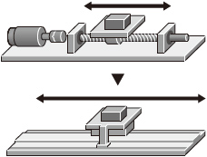
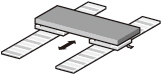
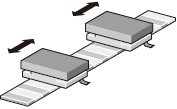

MELSERVO-JET Series Linear Servo Motor Features

Basic Performance
- Maximum speed: 2 m/s to 6.5 m/s
- Maximum thrust range: 122 N to 1800 N. Small size and high thrust are achieved by the increased winding density and the optimized core and magnet geometries as a result of electromagnetic field analysis.
- Three series are available: core (two series) and coreless (one series) types.
- The linear servo motors are compatible with a variety of serial interface linear encoders. The linear encoder resolution ranges from 1 nm and up.
- High-performance systems such as high-accuracy tandem synchronous control are achieved with CC-Link IE TSN.
- LM-H3 series features environmental resistance, designed for an altitude of 2000 m and an ambient temperature of up to 60 ℃. *1, 2
- *1.Derate the speed/thrust when using the linear servo motors at an altitude exceeding 1000 m and at high ambient temperatures.
- *2.LM-AJ series/LM-AU series are designed for an altitude of 1000 m and an ambient temperature of up to 40 ℃.
Higher Machine Performance
For higher machine performance
- Improved productivity due to high-speed driving part.
For easier use
- The linear servo motors enable a simple and compact machine with high rigidity.
- Smooth operation and clean systems are achieved.
For flexible machine configurations
- Multi-head and tandem systems are easily configured.
- The linear servo motors are suitable for long-stroke applications.
[Offers more advantage than conventional ball screw driving systems]

Ideal for Multi-Head Systems
Optimum for a linear drive system which requires a high speed and high accuracy. Easily achieve a tandem configuration or multi-head configuration.
Tandem configuration
The linear servo motors configured in tandem are suitable for large systems that require highly accurate synchronous operation between two axes.

Multi-head configuration
Multi-head systems enable control of two motor coils independently, thereby simplifying machine mechanisms. This system is suitable for machines that require a short cycle time.
